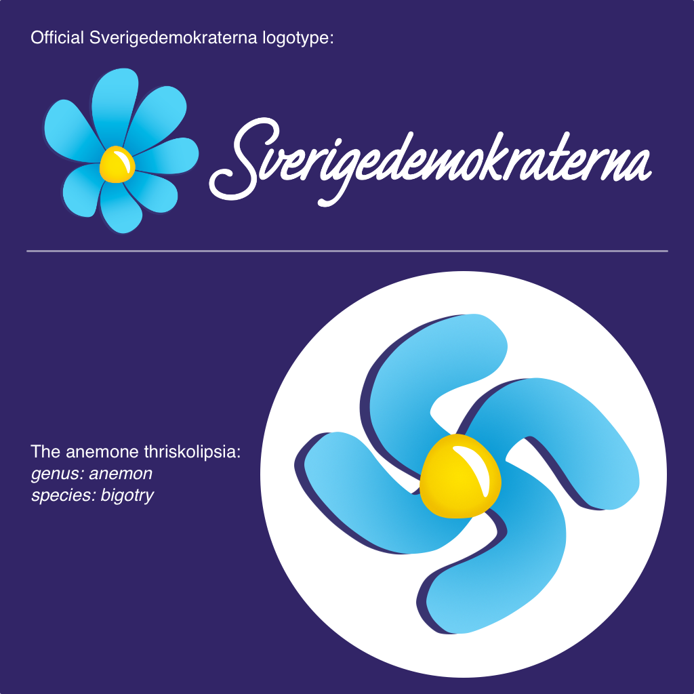
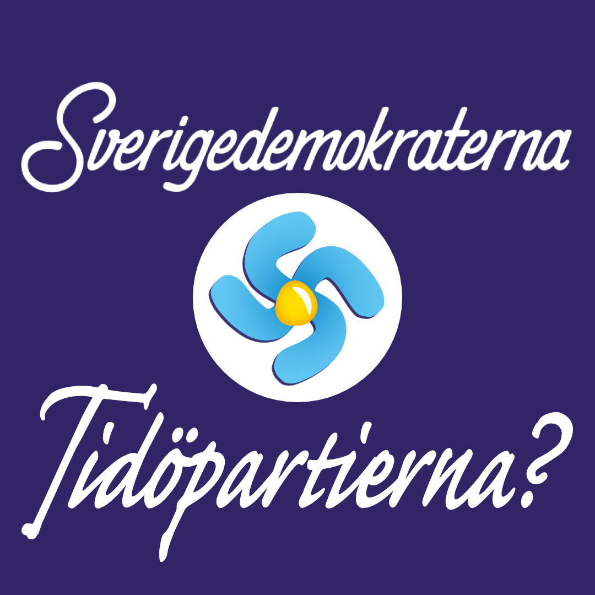
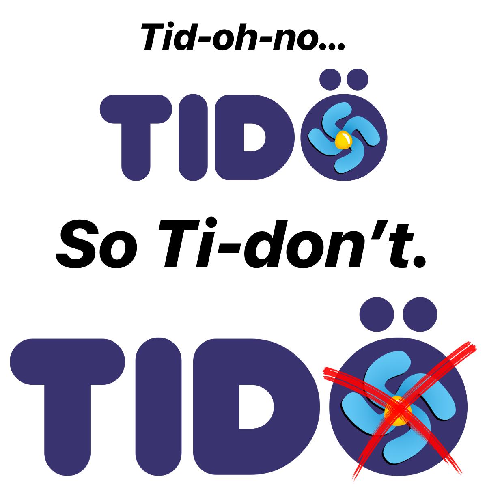
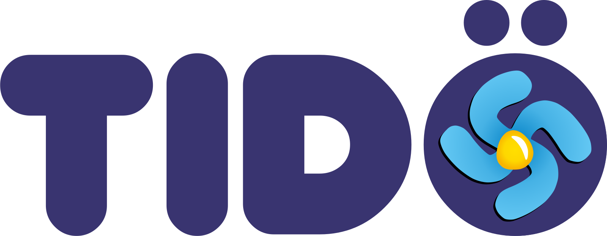
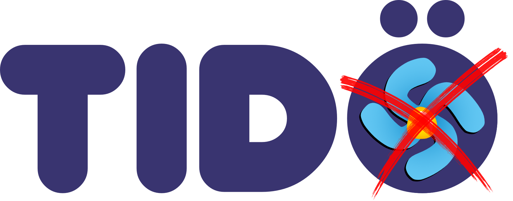
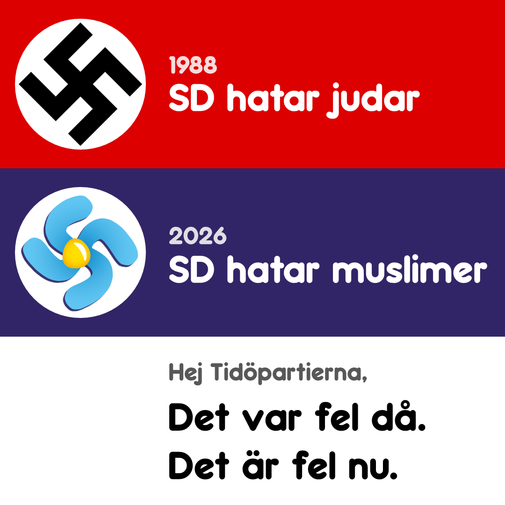
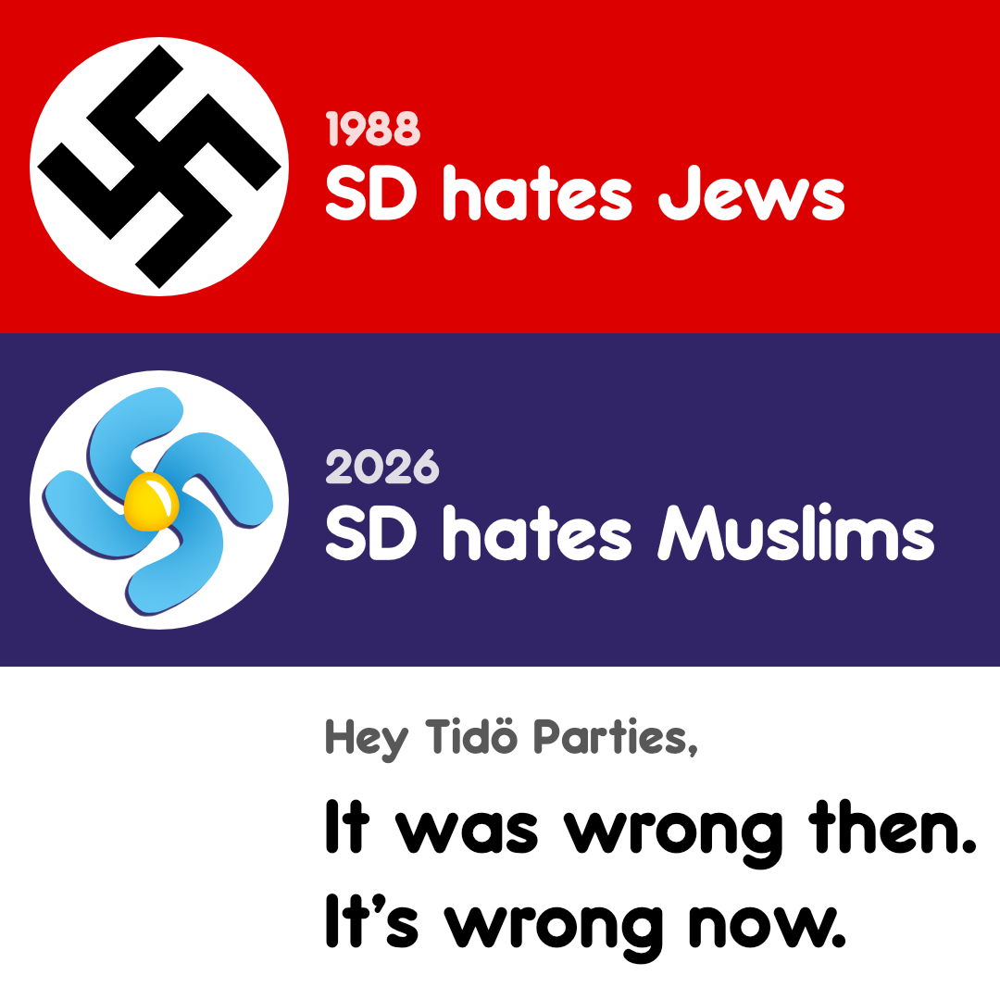

Sverige is electing its next parliament (Riksdag) on Sunday, September 13, 2026.
The last 4 years have been emotional hell for me and immigrant friends because the right-wing government demonized us culturally and made our ability to stay in the country more difficult. Doctoral students and research academics, entrepreneurs, children of immigrants, a famous drag queen, and queer people from homophobic countries have been deported or forced to leave.
How did this happen? In 1988, actual neo-Nazis and white supremacists formed the Sverigedemokraterna (SD, Swedish Democrats) party. SD remained politically ostracized until 2022 when the center-right parties Moderaterna (M/Moderates), Kristdemokraterna (K/Christian Democrats), and Liberalerna (L/Liberals) formed Tidöpartierna coalition. Ulf Kristersson, the leader of Moderaterna, met with 94-year-old Holocaust survivor Hédi Fried and promised her he would never cooperate with the SD in 2018. But Ulf really wanted to become prime minister, so he made a deal to allow SD to define immigration policy.
SD leader Jimmie Åkesson apologized for his party’s past antisemitism in 2025, but it remains a problem over a decade after introducing a “zero tolerance policy”. The party has widely-documented anti-Muslim sentiment today and ran xenophobic ads in this election.
I will vote in Sverige’s national election for the first time as a new citizen on Sunday. I love this country. I want to live and build the future from here. I bought a home and incorporated my company here. Sverige leads the world in many ways and leaders can always do better.
Hate has no place in the future. Karl Popper’s “paradox of tolerance” states that a tolerant society must be intolerant of intolerance to prevent undermining its own values. If a society extends unlimited tolerance to those who are intolerant, it risks losing its tolerance altogether.
I know many good Svenskar who have voted for center-right parties their whole lives. However, voting for M, KD, or L this year will put SD in power instead of relegating its hate to the fringe. Voting for Tidöpartierna will give SD opportunities to advance its hate-based agenda: anti-Muslim policies that also hurt all immigrants, restrictions on flying the Pride flag, reversing trans people’s legal gender recognition and access to healthcare. Good people shouldn’t tolerate that and I intend to make their willingness to work with SD uncomfortable and unpopular.
As a US emigrant, the friendliness of Moderaterna, Kristdemokraterna, and Liberalerna towards Sverigedemokraterna worries me. I witnessed some genuinely good, lifelong Republican-voting Americans slowly become fearful and hateful of immigrants and transgender people. Most of them supported centrist Republicans in the primaries, but didn’t leave the Republican party. As the Republican party become more far-right, they did too. I fear the M, KD, and L voters will slide towards fascism as their parties continue to tolerate the intolerant policies of SD.
Below are social media images and stickers for opposing the far-right Sverigedemokraterna. I hope you will post on social media and permitted posting places in meatspace. Expect this page to be updated as I make new images until the election.
The truth behind SD’s attempt to make its nationalistic hate more mainstream with a cute brand makeover is revealed when the wind blows against its blue anemone (blåsippa) flower.

Additional formats: PNG, Instagram repost, Mastodon boost
Additional formats: animated GIF sticker, Giphy, PNG, Instagram repost, Mastodon boost
Additional formats: animated GIF sticker, Giphy, PNG, Instagram repost, Mastodon boost
Provenance: T-AI-0: exclusively human creation without AI
The far-right SD is the 2nd largest party currently in Riksdag. Center-right parties kept SD from getting cabinet seats in 2022, but will welcome SD as a full Tidö coalition member if they win in 2026. Eventually, SD will demand more power as the bloc’s most voted for party.

Additional formats: Instagram repost, Mastodon boost

Additional formats: Instagram repost, Mastodon boost

Additional formats: PNG, Mastodon boost

Additional formats: animated GIF, Giphy, Mastodon boost
Provenance: T-AI-0: exclusively human creation without AI
I do not believe M, KD, and L voters are far-right sympathizers. I want them to feel more discomfort from their parties’ willingness to work with SD. The association should evoke feelings of regret and shame enough to vote differently until their parties change.
Additional formats: animated GIF, Giphy, Instagram repost, Mastodon boost
Provenance: T-AI-0: exclusively human creation without AI


Additional formats: Instagram repost, Mastodon boost
Provenance: T-AI-0: exclusively human creation without AI
These works are released under a CC BY-SA license. You may use/remix/sell them as long as you release derivative works under the same license.
{kind=link}
{kind=link}
{kind=link}
{kind=link}
{kind=link}
{kind=link}